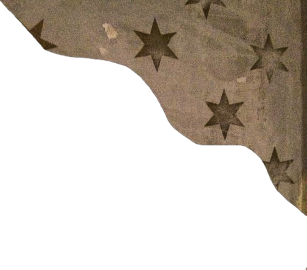
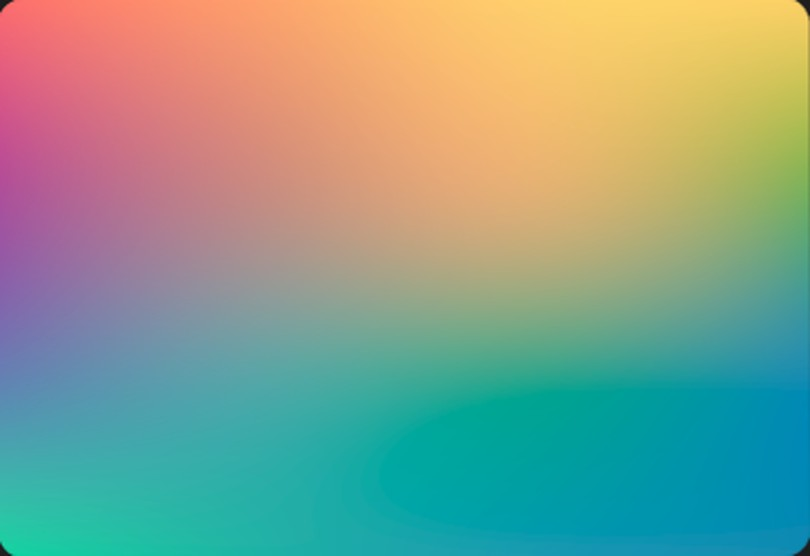
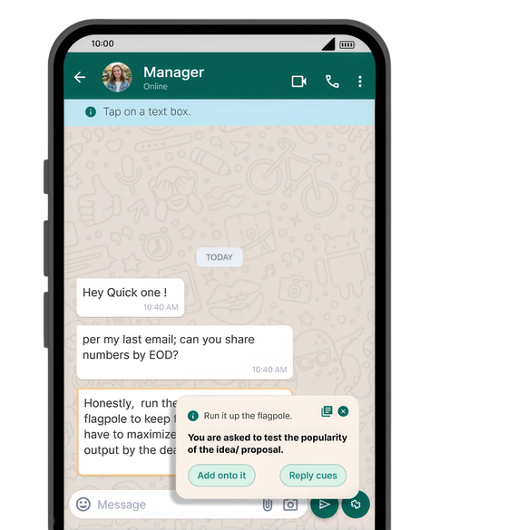

My Work



Private Editable Decode Interaction DesignSyncletter
Syncletter translates corporate jargon and idioms — helping users understand what a message means, how urgent it is, and how to reply.
Role:Design, Dev Timeline:July 2026 – August 2026 User ExperienceNearU
How might we build a trusted, hyperlocal buying culture within campus communities, so student makers can be discovered by the buyers right around them instead of scattered, informal channels?
Role:Design, Research Team:Siddhi Bhavya, Ridhi Lakhina, Naaysha Doshi Timeline:May 2026 – October 2026 AccessibilityNCFE – Redesign
How might we help people with low financial awareness find and trust reliable financial guidance, when it’s currently buried behind poor navigation and no clear starting point?
Role:Design, Prototyping, Research Timeline:April 2026 – July 2026